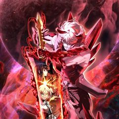
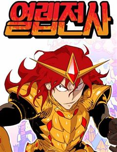
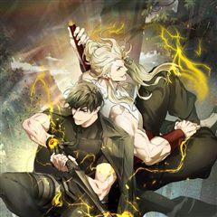

판타지 게임·상태창·던전 웹툰 추천 TOP 30
판타지 작품 중에서 게임, 게임판타지, 상태창, 헌터물 같은 요소가 들어간 작품만 골랐어요. 네이버웹툰·카카오웹툰·레진코믹스에서 조건에 맞는 작품 136개 중 인기 순으로 30개를 골랐어요. 인기 TOP 3: 나 혼자만 레벨업 : 라그나로크, 전지적 독자 시점, 나 혼자 만렙 뉴비
2026-10-09 기준 · 성인 작품 제외
내 취향으로 더 좁혀서 추천받기 →-
1
 카카오웹툰
카카오웹툰나 혼자만 레벨업 : 라그나로크
"평범한 대학생으로 살아가던 성수호. 죽음을 앞둔 순간, 잠들어 있던 그의 특별한 혈통이 깨어난다! “일어나라.” 죽음을 거스르고 지배하는 헌터, 그가 선보이는 새로운 레벨업을 주목하라!"
판타지게임판타지학원물카카오웹툰에서 보기 → -
2
 네이버웹툰
네이버웹툰전지적 독자 시점
'이건 내가 아는 그 전개다' 한순간에 세계가 멸망하고, 새로운 세상이 펼쳐졌다. 오직 나만이 완주했던 소설 세계에서 평범했던 독자의 새로운 삶이 시작된다.
판타지게임게임판타지헌터물레드아이스 스튜디오네이버웹툰에서 보기 → -
3
 네이버웹툰
네이버웹툰나 혼자 만렙 뉴비
게임 너튜버로 활동 중인 주인공 진혁은 유일하게 [시련의 탑]의 엔딩을 봤지만, 게임의 인기가 하락하며 더 이상 게임 너튜버로서의 삶도 유지하기 힘들어진다. 엔딩을 보았기에 이대로 게임을 마무리하려는 진혁. 바로 그날, [시련의 탑]은 현실이 되었다. 게임의 모든 요소를 다 알고 있는…
판타지게임게임판타지상태창레드아이스 스튜디오네이버웹툰에서 보기 → -
4
 카카오웹툰
카카오웹툰템빨
[신영우 (유저 네임: 그리드)] 세계 최고의 가상 현실 게임 <SATISFY>. 현실에서나, 게임 속에서나, 불운은 항상 그의 곁을 맴도는데.... 퀘스트 수행 중 우연히 발견한 게임 속 로또, '파그마의 기서'. 20억 명이 넘는 유저 중 유일한 최강의 레전드리 직업으로 전직. "…
판타지게임판타지사이다학원물카카오웹툰에서 보기 → -
5
 네이버웹툰
네이버웹툰퀘스트지상주의
[외모지상주의], [싸움독학], [인생존망]과 세계관을 공유하는 작품! 공부, 싸움, 외모. 뭐 하나 잘난 것 없는 평범한 고등학생 ‘김수현’의 눈앞에 갑자기 퀘스트창이 나타났다! 첫 번째 퀘스트, [엄마한테 사과하기]를 완료한 수현은 보상으로 키가 3cm 커지게 되는데! 퀘스트 엄청…
판타지게임게임판타지상태창사이다네이버웹툰에서 보기 → -
6
 카카오웹툰
카카오웹툰로그인 무림
세상의 경계인 게이트에서 몬스터 사냥을 하는 헌터들이 잘 먹고 잘 사는 시대. 주인공 진태경은 최하위 헌터라 벌이가 시원찮다. 어느 날, 낡은 VR 게임기를 줍게 되고 접속하니 무림의 세계가 펼쳐진다. 우여곡절 끝에 현실로 돌아온 태경은 무림에서 얻었던 힘이 현실에서도 그대로 남아있음…
판타지게임판타지개그서스펜스액션카카오웹툰에서 보기 → -
7
 카카오웹툰
카카오웹툰픽 미 업!
그 누구도 던전의 끝까지 오르지 못한 극악의 난이도를 자랑하는 모바일 가챠 게임 <픽 미 업!(Pick me up!)> 마스터 오브 마스터라 불리는 세계 랭킹 5위의 마스터 '로키'는 던전을 깨던 중 정신을 잃게 된다. 깨어나 보니 레벨도 1, 등급도 1성인 <픽 미 업!> 속 영웅…
판타지게임판타지사이다액션카카오웹툰에서 보기 → -
8
 네이버웹툰
네이버웹툰내가 키운 S급들
F급 헌터. 그것도 잘나가는 S급 동생 발목이나 잡는 쓸모없고 찌질한 F급 형. 개판된 인생 대충 살다가 결국 동생 목숨까지 잡아먹고 회귀한 내게 주어진 칭호, '완벽한 양육자'. 그래, 이번에는 나대지 말고 얌전히 잘난놈들 뒷바라지나 해 주자. 라고 생각했는데, S급들이 좀 이상하다.
판타지상태창헌터물던전물현대판타지네이버웹툰에서 보기 → -
9
 네이버웹툰
네이버웹툰99강화나무몽둥이
약육강식이 진리인 가상 현실 게임 '크로노 라이프'. 허접이라며 무시만 당하던 '나'는 우연히 얻은 초보용 기본 무기 '나무 뭉둥이' 를 +99 강화까지 성공하게 되고, 본인을 무시하던 놈들을 찾아다니며 몽둥이로 무자비하게 패기 시작하는데..! 막장 스케일 사이다 액션 스타트!!
판타지게임게임판타지헌터물사이다네이버웹툰에서 보기 → -
10

카카오웹툰이계 검왕 생존기
『귀하는 적합자로 선택받았습니다』 『귀하의 재능으로 셀하 라트나에서 생존할 확률은 5% 미만입니다』 『자살하시겠습니까? Y/N』 “x-까.” 5% 미만의 생존 확률. 22년의 시간. 셀 수도 없는 마견과의 사투. 이 지옥에서, 나는 홀로 살아남았다. 5라는 레벨 뒤에 감춰진, 무지막지…
판타지게임판타지개그학원물카카오웹툰에서 보기 → -
11네이버웹툰
현실퀘스트
게임 아이템을 가져오라는 일진의 협박으로 인해 일주일간 밤샘 게임을 하다 죽음을 맞이한 비운의 게임셔틀 하도완 그 순간 일주일 전 교실에서 리스폰되는데... 모든 것이 그날과 똑같다. 달라진 것은 단 하나, 눈앞에 떠있는 <퀘스트 알림>! 뭐? 내가 지금껏 하던 게임들의 스킬을 이용해…
판타지게임판타지회귀학원물네이버웹툰에서 보기 → -
12
 카카오웹툰
카카오웹툰만 년 만에 귀환한 플레이어
어느 날, 갑작스럽게 지옥으로 떨어졌다. 가진 것은 살고 싶다는 갈망과 포식의 권능 뿐. 일천의 지옥부터 구천의 지옥까지. 수만, 수십만의 악마를 잡아먹었고. 마침내 일곱 대공까지 그 앞에 무릎을 꿇었다. "어째서 돌아가려고 하십니까? 왕께서는 이미 지옥의 모든 것을 가지고 계시지 않…
판타지게임판타지액션카카오웹툰에서 보기 → -
13

네이버웹툰열렙전사
'퀘스트를 클리어 하는 자, 모든 것을 얻을 것이다' 현실 밖의 현실, 루시드 어드벤쳐 최강의 용사 '열렙전사'와 동료들이 벌이는 본격 RPG 어드벤쳐.
판타지게임판타지몰아보기먼치킨네이버웹툰에서 보기 → -
14
 네이버웹툰
네이버웹툰신화급 귀속 아이템을 손에 넣었다
D급 무투계 레이더로 마법계 레이더들의 고기방패나 하며 별 볼 일 없이 살던 재현. 그러던 어느 날, 던전에서 우연히 "오딘의 눈" 이라는 최강의 귀속 아이템을 얻게 됐다. 신의 눈을 가진 자, 세계를 구할 신의 대적자의 운명을 개척하라!
판타지게임판타지헌터물사이다아카데미물네이버웹툰에서 보기 → -
15

카카오웹툰신과 함께 레벨업
이계의 신, 아우터 갓(Outer God). 하늘을 닫는 절망과 늪에 빠진 좌절, 탄생하지 못한 자, 어리석은 혼돈. 평범한 사람들은 그저 바라보는 것만으로 목숨을 잃어 버릴 그 존재들이 세상을 휘젓는 지금… 수 년간의 싸움 끝에, 최후의 생존자들이 낸 결론. "이너(Inner)는 아…
판타지게임판타지액션카카오웹툰에서 보기 → -
16
 네이버웹툰
네이버웹툰나 혼자 탑에서 농사
어느 날 갑자기 도시에 나타난 정체불명의 탑. 사람들은 그곳을 던전이라고 부르기로 했다. 그리고 그곳은 험한 지형과 위험한 몬스터들로 가득했지만 수많은 보물이 기다리는 기회의 땅이기도 하다. 평범한 삶을 살고 있던 청년 세준은 우연한 기회로 던전에 초대받게 되고 자신도 부자가 될 생각…
판타지헌터물농사가족지금추천작네이버웹툰에서 보기 → -
17
 카카오웹툰
카카오웹툰얼어붙은 플레이어의 귀환
세상이 바뀌고 5년. 최종보스가 나타났다. [지구 에어리어의 최후의 보스, 서리여왕이 출현합니다.] 최후의 보스! 그녀만 처치하면 예전처럼 살 수 있다! 인류 최고의 플레이어, 어둑서니를 포함한 다섯 명의 플레이어가 마침내 서리여왕을 쓰러뜨리지만... 그들은 기나긴 잠에 빠지는 혹독한…
판타지게임판타지사이다학원물카카오웹툰에서 보기 → -
18
 카카오웹툰
카카오웹툰레벨업 못하는 플레이어
18세의 나이에 '플레이어'로 각성한 김기규. '탑'을 오르고 '게이트'를 닫으며 인생이 탄탄대로일 줄 알았는데... 튜토리얼을 아무리 클리어해도 레벨1. 1일 1고블린을 해도 레벨1. 5년이 지나도 레벨1. "누가 알았겠냐고, 이런 플레이어가 있는지." 그 누구도 몰랐다. 탑을 뒤흔…
판타지게임판타지서스펜스액션카카오웹툰에서 보기 → -
19
 네이버웹툰
네이버웹툰천마육성
마교의 태왕각주 ‘사마귀’의 명령으로 화산파 출몰 지역으로 파견나간 비객조. ‘설휘’는 화산파의 절대고수 ‘구종명’에게 죽임을 당할 위기에 처한다. 그때 눈 앞에 상태창이 나타나고 정찰 임무를 받기 직전으로 회귀하게 된다. 설휘는 자신이 전생에서 죽임을 당했던 똑같은 임무를 받게 되자…
판타지게임게임판타지상태창자극적인네이버웹툰에서 보기 → -
20
 카카오웹툰
카카오웹툰2레벨로 회귀한 무신
[무가치한 인류를 삭제합니다] 게임인 줄로만 알았던 '배틀넷'이 인류에게 재앙을 불러왔다. 온 우주의 생물들이 목숨을 걸고 경쟁하는 '스페이스 리그'가 개최 후 지구의 대표 인류는 패배를 반복하면서 결국 인류는 종말을 맞이했다 단 한 사람만 빼곤 '무성' 성지한. 그의 스킬 '무명신공…
판타지게임판타지사이다카카오웹툰에서 보기 → -
21
 네이버웹툰
네이버웹툰아카데미에서 살아남기
즐겨하던 게임의 삼류 엑스트라 악역으로 빙의했다. 야망은 없고 그냥 조용히 살고 싶다. 근데 세상이 참 살아남기 힘들다. 주인공이 할 수 없는 삼류 악역의 방식으로, 난 이 이야기의 끝을 맞이하기 위해 살아남는다!
판타지게임판타지상태창하렘생존네이버웹툰에서 보기 → -
22
 네이버웹툰
네이버웹툰게임 속 바바리안으로 살아남기
지금껏 아무도 클리어하지 못한 게임 [던전 앤 스톤]을 9년간 플레이한 끝에 최종 보스 스테이지에 도달한 이한수. 그러나 보스 방에 입장함과 동시에, 튜토리얼 완료라는 멘트와 함께 [던전 앤 스톤] 속 바바리안 '비요른 얀델'에 빙의하게 된다. 도시에서 부과하는 막대한 세금을 내지 못…
판타지게임게임판타지생존액션네이버웹툰에서 보기 → -
23
 카카오웹툰
카카오웹툰해골병사는 던전을 지키지 못했다
나는 ‘해골병사’. 주인인 서큐버스님을 용사로부터 지키지 못하고 그저 하찮게 부서져 버린 일개 몬스터. 그렇게 죽음을 맞이하는 줄 알았다. 그러나 정신을 차려보니, 20년 전 사령술사에 의해 눈을 뜬 그 날로 돌아왔다. ‘띠링!’ 남들에게는 보이지 않는 상태창과 함께, 죽어도 죽어도…
판타지게임판타지미스터리서스펜스학원물카카오웹툰에서 보기 → -
24
 네이버웹툰
네이버웹툰디펜스 게임의 폭군이 되었다
타워디펜스&던전오펜스 RPG <제국을 지켜라> 누구도 클리어하지 못한 난이도로 게임의 엔딩을 봤다. 그런데 정신을 차리니 게임 속이다. 그것도 공략이 불가능한 튜토리얼 스테이지다. "반드시 클리어해 주마, 이 거지 같은 게임……!"
판타지게임게임판타지상태창고인물네이버웹툰에서 보기 → -
25

-
26
 네이버웹툰
네이버웹툰리턴 투 플레이어
어느 날, 게임이 되어버린 세상. 갑자기 나타난 몬스터들이 사람들을 죽이고, 사람들은 플레이어가 되어 퀘스트를 달성해야 한다! 인류의 종말에서 회귀한 2회차 플레이어, 김세한. 그는 과연 세상을 이렇게 만든 '시스템'을 쳐부술 수 있을까!
판타지게임게임판타지신화배틀네이버웹툰에서 보기 → -
27
 네이버웹툰
네이버웹툰회귀한 천재 헌터의 슬기로운 청소생활
세계 최초 SSS랭크 천재 헌터 김준우. 어느 날 습격을 당해 죽게 되고, 10년 전으로 회귀한다. 스킬은 모두 봉인됐고, 해제를 위해서는 극한 직업인 던전 청소부로 일을 해야 하는데?! 하지만 이 청소부, 남다르다! 현직 헌터보다 더 강한 전직 헌터의 망나니식 청소가 시작된다!…
판타지헌터물사이다현대판타지현대네이버웹툰에서 보기 → -
28네이버웹툰
악당들의 후원자가 되었다
좋소 노예인 내가 게임 속 귀족으로 빙의되었다. 근데 미래의 악당들에게 죽는 엑스트라라고? 이들을 교화시켜 어떻게든 귀족 생활을 누리고 말 테다! 아직 어린 악당들의 흑화를 막기 위해 후원했고, 어려운 환경을 극복하게 만들어줬다. 그 결과 뿌듯함이 느껴질 만큼 모두 훌륭하고 평범하게…
판타지게임게임판타지액션판타지판타지개그네이버웹툰에서 보기 → -
29
 네이버웹툰
네이버웹툰어느 마법사의 식당
요리사를 꿈꾸던 내가 사고로 이세계에 떨어졌다. 몬스터와 마법이 넘쳐나는 판타지 세계이지만 여기라고 식당을 못할 건 없잖아? 그러나 전쟁으로 인해 이세계에 들어오자마자 군대에 끌려가게 되고, 15년간의 고생 끝에 드디어 나만의 식당을 열게 되는데...
판타지게임판타지마법요즘핫한추천작힐링네이버웹툰에서 보기 → -
30
 네이버웹툰
네이버웹툰더블클릭
악명 높은 난이도를 가진 게임의 세계 랭킹 1위였던 지호. 서비스 종료된 줄만 알았던 그 게임이 새롭게 돌아왔다! 지호는 다시 한번 랭킹 1위를 꿈꾸며 게임 동아리에 입부한다. 오랜만에 게임을 해도 살아있는 감각. 하지만 게임이 새롭게 변하면서 예상치 못한 약점이 생긴다. 강한 상대를…
판타지게임게임판타지학원액션소년물네이버웹툰에서 보기 →